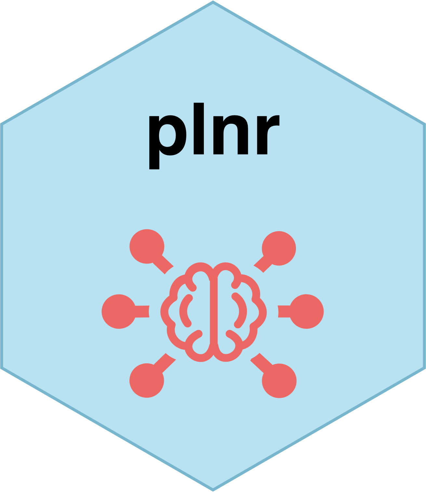
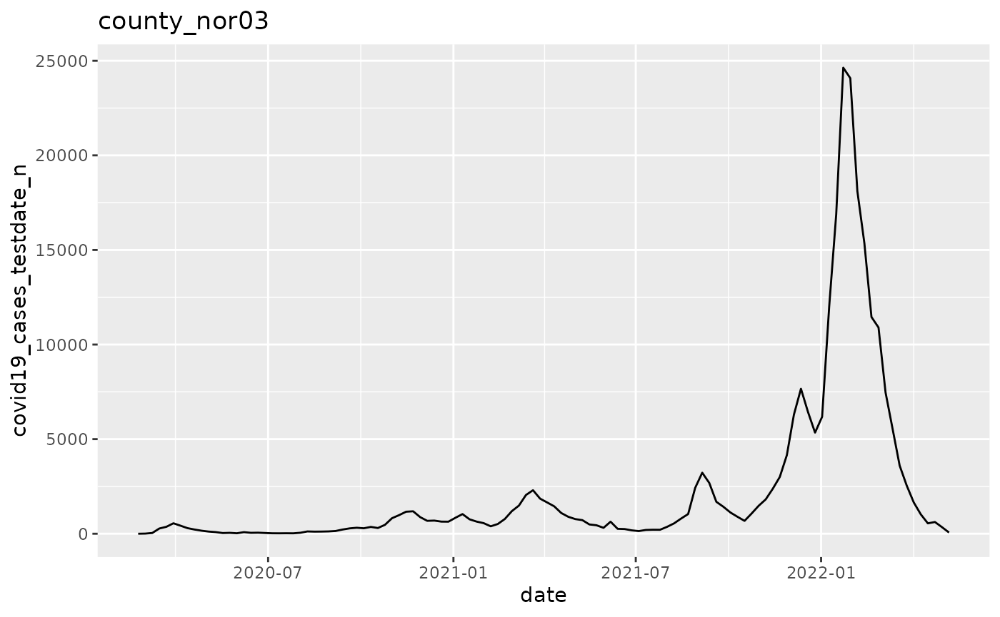
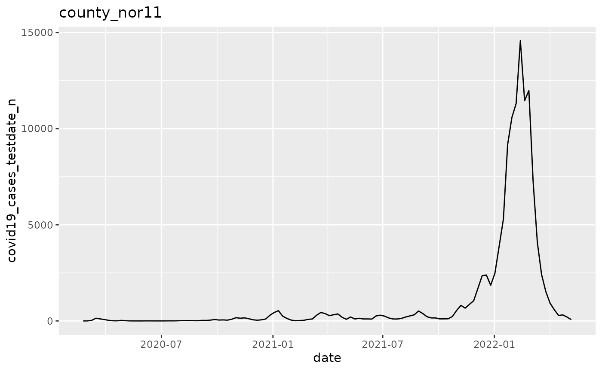
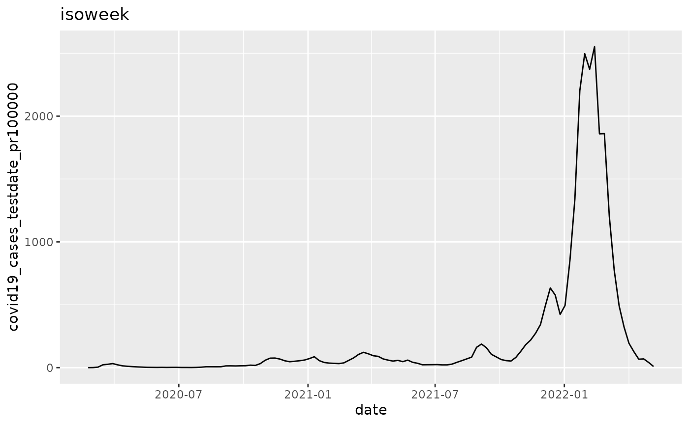
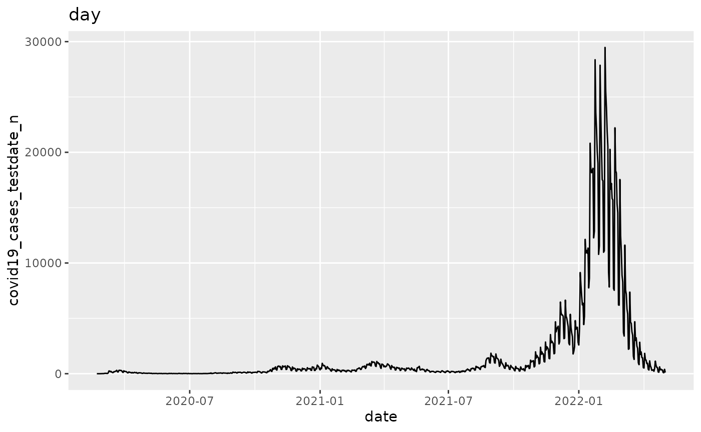
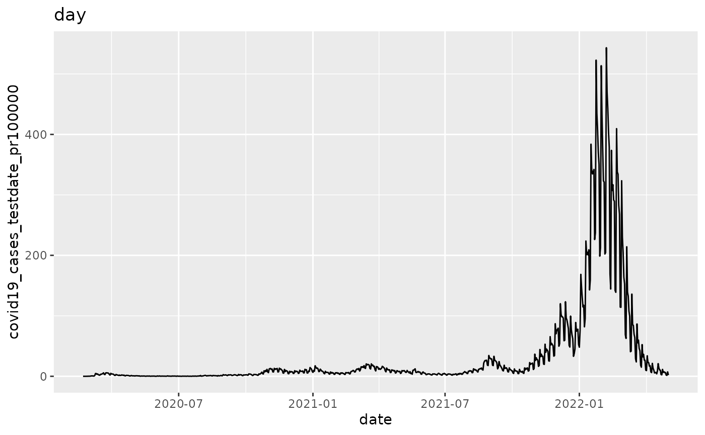
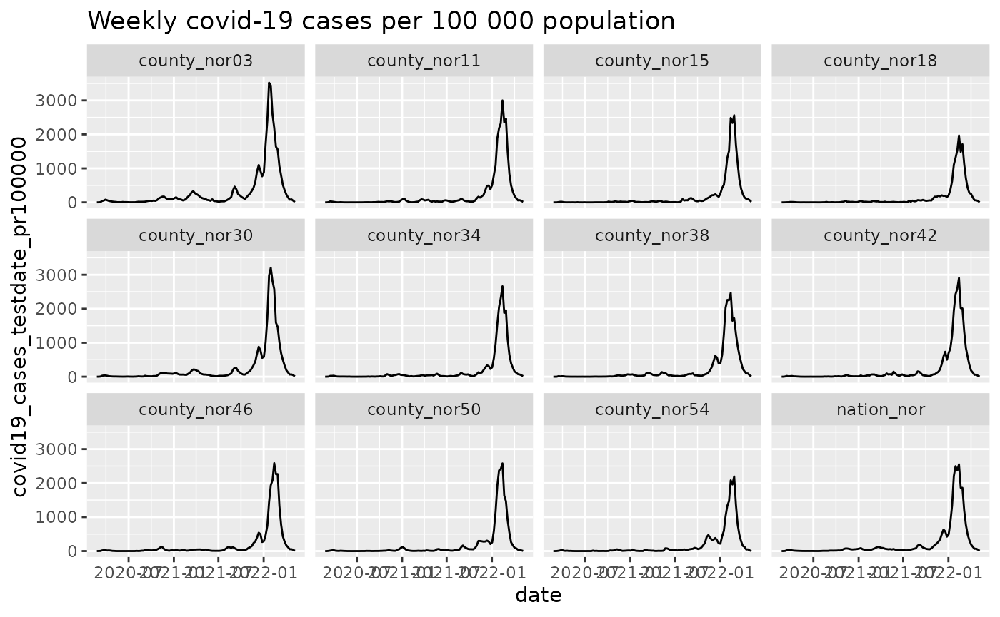
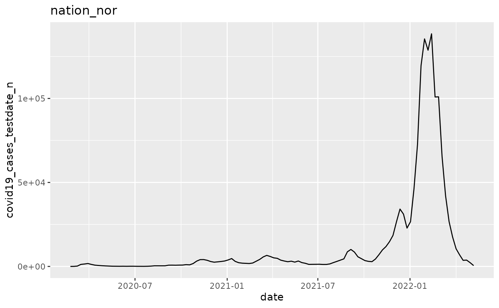

Adding Analyses to a Plan
Richard Aubrey White
2022-06-02
Source:../vignettes/adding_analyses.Rmd
adding_analyses.Rmd| Broad technical terms | |
| Object | Description |
| argset | A named list containing a set of arguments. |
| analysis |
These are the fundamental units that are scheduled in
|
| plan |
This is the overarching “scheduler”:
|
| Different types of plans | |
| Plan Type | Description |
| Single-function plan | Same action function applied multiple times with different argsets applied to the same datasets. |
| Multi-function plan | Different action functions applied to the same datasets. |
| Plan Examples | |
| Plan Type | Example |
| Single-function plan | Multiple strata (e.g. locations, age groups) that you need to apply the same function to to (e.g. outbreak detection, trend detection, graphing). |
| Single-function plan | Multiple variables (e.g. multiple outcomes, multiple exposures) that you need to apply the same statistical methods to (e.g. regression models, correlation plots). |
| Multi-function plan | Creating the output for a report (e.g. multiple different tables and graphs). |
Single-function plan
This approach is generally used when you:
- Have multiple strata (e.g. locations, age groups) that you need to apply the same statistical methods to.
- Have multiple variables (e.g. multiple exposures, multiple outcomes) that you want to apply the same statistical methods to.
When we apply the same function multiple times, it is preferable to add the argsets first, and then apply the analysis function just before running the analyses.
Multiple strata
In this example, we loop through multiple geographical locations and apply a graphing function to the data from each of these geographical locations.
library(ggplot2)
library(data.table)
library(magrittr)
# We begin by defining a new plan
p <- plnr::Plan$new()
# Data function
data_fn <- function(){
return(plnr::nor_covid19_cases_by_time_location)
}
# We add sources of data
# We can add data directly
p$add_data(
name = "covid19_cases",
fn_name = "data_fn"
)
p$get_data()## $covid19_cases
## granularity_time granularity_geo country_iso3 location_code border age
## 1: day county nor county_nor03 2020 total
## 2: day county nor county_nor03 2020 total
## 3: day county nor county_nor03 2020 total
## 4: day county nor county_nor03 2020 total
## 5: day county nor county_nor03 2020 total
## ---
## 11024: isoweek nation nor nation_nor 2020 total
## 11025: isoweek nation nor nation_nor 2020 total
## 11026: isoweek nation nor nation_nor 2020 total
## 11027: isoweek nation nor nation_nor 2020 total
## 11028: isoweek nation nor nation_nor 2020 total
## sex isoyear isoweek isoyearweek season seasonweek calyear calmonth
## 1: total 2020 8 2020-08 2019/2020 31 2020 2
## 2: total 2020 8 2020-08 2019/2020 31 2020 2
## 3: total 2020 8 2020-08 2019/2020 31 2020 2
## 4: total 2020 9 2020-09 2019/2020 32 2020 2
## 5: total 2020 9 2020-09 2019/2020 32 2020 2
## ---
## 11024: total 2022 14 2022-14 2021/2022 37 NA NA
## 11025: total 2022 15 2022-15 2021/2022 38 NA NA
## 11026: total 2022 16 2022-16 2021/2022 39 NA NA
## 11027: total 2022 17 2022-17 2021/2022 40 NA NA
## 11028: total 2022 18 2022-18 2021/2022 41 NA NA
## calyearmonth date covid19_cases_testdate_n
## 1: 2020-M02 2020-02-21 0
## 2: 2020-M02 2020-02-22 0
## 3: 2020-M02 2020-02-23 0
## 4: 2020-M02 2020-02-24 0
## 5: 2020-M02 2020-02-25 0
## ---
## 11024: <NA> 2022-04-10 6888
## 11025: <NA> 2022-04-17 3635
## 11026: <NA> 2022-04-24 3764
## 11027: <NA> 2022-05-01 2243
## 11028: <NA> 2022-05-08 502
## covid19_cases_testdate_pr100000
## 1: 0.000000
## 2: 0.000000
## 3: 0.000000
## 4: 0.000000
## 5: 0.000000
## ---
## 11024: 126.961423
## 11025: 67.001274
## 11026: 69.379036
## 11027: 41.343564
## 11028: 9.252996
##
## $hash
## $hash$current
## [1] "cbb5d442160f26df4c2d9a4fec794fd7"
##
## $hash$current_elements
## $hash$current_elements$covid19_cases
## [1] "7f1b0a581386e75e907bffd94938a3a7"## [1] "county_nor03" "county_nor11" "county_nor15" "county_nor18" "county_nor30"
## [6] "county_nor34" "county_nor38" "county_nor42" "county_nor46" "county_nor50"
## [11] "county_nor54" "nation_nor"
p$add_argset_from_list(
plnr::expand_list(
location_code = location_codes,
granularity_time = "isoweek"
)
)
# Examine the argsets that are available
p$get_argsets_as_dt()## name_analysis index_analysis location_code
## 1: 82f2726f-d9ea-4178-9b2c-d095a302f0c4 1 county_nor03
## 2: 36c335a9-8e17-4372-ae0e-a22c453a4e0a 2 county_nor11
## 3: 2288dfdb-7e06-4416-b5cd-87b257f3aa17 3 county_nor15
## 4: 08673612-7055-42f2-a7a2-1c74fef59019 4 county_nor18
## 5: d9a170f3-d4ab-4b13-9f5e-4c7f9b3cb6b8 5 county_nor30
## 6: 8116498d-cc48-4dc3-9c99-07f69c024eb3 6 county_nor34
## 7: 07b61d08-88a6-4a9a-a5b6-f3a30f6d46d0 7 county_nor38
## 8: d655c9b7-abf8-4d02-9ff9-8e941e7dbdb9 8 county_nor42
## 9: 3a9e0dd9-363b-4a43-8525-22baaa5a69a1 9 county_nor46
## 10: c6684fb8-64db-4bbe-ba98-650350505246 10 county_nor50
## 11: 5763d007-d661-481c-a87a-7598b0cfce24 11 county_nor54
## 12: ac544a8e-3cd1-4f35-abc3-8891e411a0bb 12 nation_nor
## granularity_time
## 1: isoweek
## 2: isoweek
## 3: isoweek
## 4: isoweek
## 5: isoweek
## 6: isoweek
## 7: isoweek
## 8: isoweek
## 9: isoweek
## 10: isoweek
## 11: isoweek
## 12: isoweek
# We can then add a simple analysis that returns a figure:
# To do this, we first need to create an action function
# (takes two arguments -- data and argset)
action_fn <- function(data, argset){
if(plnr::is_run_directly()){
data <- p$get_data()
argset <- p$get_argset(1)
}
pd <- data$covid19_cases[
location_code == argset$location_code &
granularity_time == argset$granularity_time
]
q <- ggplot(pd, aes(x=date, y=covid19_cases_testdate_n))
q <- q + geom_line()
q <- q + labs(title = argset$location_code)
q
}
p$apply_action_fn_to_all_argsets(fn_name = "action_fn")
p$run_one(1)
q <- p$run_all()
q[[1]]
q[[2]]
Multiple variables
In this example, we loop through multiple variable combinations (1. raw numbers of Covid-19 cases vs Covid-19 cases per 100 000 population, and 2. aggregating over isoweek vs day) and apply a graphing function to the data according to each of these variable combinations.
library(ggplot2)
library(data.table)
library(magrittr)
# We begin by defining a new plan
p <- plnr::Plan$new()
# Data function
data_fn <- function(){
return(plnr::nor_covid19_cases_by_time_location[location_code=="nation_nor"])
}
# We add sources of data
# We can add data directly
p$add_data(
name = "covid19_cases",
fn_name = "data_fn"
)
p$get_data()## $covid19_cases
## granularity_time granularity_geo country_iso3 location_code border age
## 1: day nation nor nation_nor 2020 total
## 2: day nation nor nation_nor 2020 total
## 3: day nation nor nation_nor 2020 total
## 4: day nation nor nation_nor 2020 total
## 5: day nation nor nation_nor 2020 total
## ---
## 915: isoweek nation nor nation_nor 2020 total
## 916: isoweek nation nor nation_nor 2020 total
## 917: isoweek nation nor nation_nor 2020 total
## 918: isoweek nation nor nation_nor 2020 total
## 919: isoweek nation nor nation_nor 2020 total
## sex isoyear isoweek isoyearweek season seasonweek calyear calmonth
## 1: total 2020 8 2020-08 2019/2020 31 2020 2
## 2: total 2020 8 2020-08 2019/2020 31 2020 2
## 3: total 2020 8 2020-08 2019/2020 31 2020 2
## 4: total 2020 9 2020-09 2019/2020 32 2020 2
## 5: total 2020 9 2020-09 2019/2020 32 2020 2
## ---
## 915: total 2022 14 2022-14 2021/2022 37 NA NA
## 916: total 2022 15 2022-15 2021/2022 38 NA NA
## 917: total 2022 16 2022-16 2021/2022 39 NA NA
## 918: total 2022 17 2022-17 2021/2022 40 NA NA
## 919: total 2022 18 2022-18 2021/2022 41 NA NA
## calyearmonth date covid19_cases_testdate_n
## 1: 2020-M02 2020-02-21 1
## 2: 2020-M02 2020-02-22 0
## 3: 2020-M02 2020-02-23 0
## 4: 2020-M02 2020-02-24 0
## 5: 2020-M02 2020-02-25 0
## ---
## 915: <NA> 2022-04-10 6888
## 916: <NA> 2022-04-17 3635
## 917: <NA> 2022-04-24 3764
## 918: <NA> 2022-05-01 2243
## 919: <NA> 2022-05-08 502
## covid19_cases_testdate_pr100000
## 1: 0.01863037
## 2: 0.00000000
## 3: 0.00000000
## 4: 0.00000000
## 5: 0.00000000
## ---
## 915: 126.96142312
## 916: 67.00127367
## 917: 69.37903551
## 918: 41.34356447
## 919: 9.25299570
##
## $hash
## $hash$current
## [1] "0ad573d37712f0a8ab666846d1b721a1"
##
## $hash$current_elements
## $hash$current_elements$covid19_cases
## [1] "07cc51795bccaf2afebe48619ce87227"
p$add_argset_from_list(
plnr::expand_list(
variable = c("covid19_cases_testdate_n", "covid19_cases_testdate_pr100000"),
granularity_time = c("isoweek","day")
)
)
# Examine the argsets that are available
p$get_argsets_as_dt()## name_analysis index_analysis
## 1: d4a6d5dc-c313-4d58-a0ad-b33d2a5cb905 1
## 2: a6bdba4e-2ec0-4494-aadf-b7bf85a0a2a0 2
## 3: 8dbbeeba-1cfa-44c9-834f-dadda696577a 3
## 4: adea6d40-e3ce-4603-b61f-ae9de982cb34 4
## variable granularity_time
## 1: covid19_cases_testdate_n isoweek
## 2: covid19_cases_testdate_pr100000 isoweek
## 3: covid19_cases_testdate_n day
## 4: covid19_cases_testdate_pr100000 day
# We can then add a simple analysis that returns a figure:
# To do this, we first need to create an action function
# (takes two arguments -- data and argset)
action_fn <- function(data, argset){
if(plnr::is_run_directly()){
data <- p$get_data()
argset <- p$get_argset(1)
}
pd <- data$covid19_cases[
granularity_time == argset$granularity_time
]
q <- ggplot(pd, aes_string(x="date", y=argset$variable))
q <- q + geom_line()
q <- q + labs(title = argset$granularity_time)
q
}
p$apply_action_fn_to_all_argsets(fn_name = "action_fn")
p$run_one(1)
p$run_one(2)
p$run_one(3)
p$run_one(4)
Multi-function plan
This approach is generally used when you are creating the output for a report, and you need multiple different tables and graphs.
library(ggplot2)
library(data.table)
library(magrittr)
# We begin by defining a new plan
p <- plnr::Plan$new()
# Data function
data_fn <- function(){
return(plnr::nor_covid19_cases_by_time_location)
}
# We add sources of data
# We can add data directly
p$add_data(
name = "covid19_cases",
fn_name = "data_fn"
)
p$get_data()## $covid19_cases
## granularity_time granularity_geo country_iso3 location_code border age
## 1: day county nor county_nor03 2020 total
## 2: day county nor county_nor03 2020 total
## 3: day county nor county_nor03 2020 total
## 4: day county nor county_nor03 2020 total
## 5: day county nor county_nor03 2020 total
## ---
## 11024: isoweek nation nor nation_nor 2020 total
## 11025: isoweek nation nor nation_nor 2020 total
## 11026: isoweek nation nor nation_nor 2020 total
## 11027: isoweek nation nor nation_nor 2020 total
## 11028: isoweek nation nor nation_nor 2020 total
## sex isoyear isoweek isoyearweek season seasonweek calyear calmonth
## 1: total 2020 8 2020-08 2019/2020 31 2020 2
## 2: total 2020 8 2020-08 2019/2020 31 2020 2
## 3: total 2020 8 2020-08 2019/2020 31 2020 2
## 4: total 2020 9 2020-09 2019/2020 32 2020 2
## 5: total 2020 9 2020-09 2019/2020 32 2020 2
## ---
## 11024: total 2022 14 2022-14 2021/2022 37 NA NA
## 11025: total 2022 15 2022-15 2021/2022 38 NA NA
## 11026: total 2022 16 2022-16 2021/2022 39 NA NA
## 11027: total 2022 17 2022-17 2021/2022 40 NA NA
## 11028: total 2022 18 2022-18 2021/2022 41 NA NA
## calyearmonth date covid19_cases_testdate_n
## 1: 2020-M02 2020-02-21 0
## 2: 2020-M02 2020-02-22 0
## 3: 2020-M02 2020-02-23 0
## 4: 2020-M02 2020-02-24 0
## 5: 2020-M02 2020-02-25 0
## ---
## 11024: <NA> 2022-04-10 6888
## 11025: <NA> 2022-04-17 3635
## 11026: <NA> 2022-04-24 3764
## 11027: <NA> 2022-05-01 2243
## 11028: <NA> 2022-05-08 502
## covid19_cases_testdate_pr100000
## 1: 0.000000
## 2: 0.000000
## 3: 0.000000
## 4: 0.000000
## 5: 0.000000
## ---
## 11024: 126.961423
## 11025: 67.001274
## 11026: 69.379036
## 11027: 41.343564
## 11028: 9.252996
##
## $hash
## $hash$current
## [1] "0306cac791d5f990073167e17ed15f9b"
##
## $hash$current_elements
## $hash$current_elements$covid19_cases
## [1] "bad75e8e213b3de3eee2b4ecbf157f46"
# Completely unique function for figure 1
p$add_analysis(
name = "figure_1",
fn_name = "figure_1"
)
figure_1 <- function(data, argset){
if(plnr::is_run_directly()){
data <- p$get_data()
argset <- p$get_argset("figure_1")
}
pd <- data$covid19_cases[
granularity_time == "isoweek"
]
q <- ggplot(pd, aes_string(x="date", y="covid19_cases_testdate_pr100000"))
q <- q + geom_line()
q <- q + facet_wrap(~location_code)
q <- q + labs(title = "Weekly covid-19 cases per 100 000 population")
q
}
# Reusing a function for figures 2 and 3
p$add_analysis(
name = "figure_2",
fn_name = "plot_epicurve_by_location",
location_code = "nation_nor"
)
# Reusing a function for figures 2 and 3
p$add_analysis(
name = "figure_3",
fn_name = "plot_epicurve_by_location",
location_code = "county_nor03"
)
plot_epicurve_by_location <- function(data, argset){
if(plnr::is_run_directly()){
data <- p$get_data()
argset <- p$get_argset("figure_2")
argset <- p$get_argset("figure_3")
}
pd <- data$covid19_cases[
granularity_time == "isoweek" &
location_code == argset$location_code
]
q <- ggplot(pd, aes_string(x="date", y="covid19_cases_testdate_n"))
q <- q + geom_line()
q <- q + labs(title = argset$location_code)
q
}
p$run_one("figure_1")
p$run_one("figure_2")
p$run_one("figure_3")